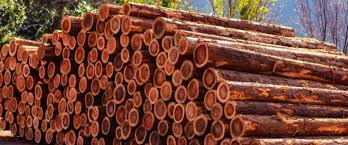
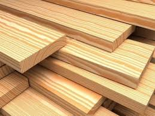
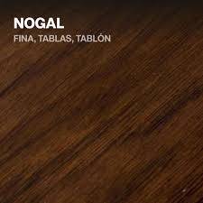
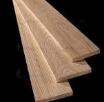
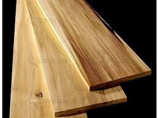
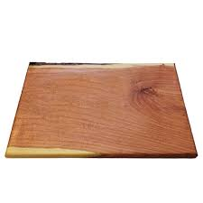

Exploremos juntos este negocio
Los diferenes tipos de madera que manejamos son las siguientes:
Resiste al ataque tanto de hongos como insectos, gracias a la resina que sustenta la madera, convirtiéndola así en una madera muy apta para exteriores. Al crecer en climas húmedos y con abundancia de insectos, desarrollan una gran resistencia frente a humedades, grietas y altas temperaturas.
La madera de pino tiene muchos beneficios, tiene una gran durabilidad y resistencia a la humedad, hongos, insectos si es tratada apropiadamente.
El nogal permite un fácil aserrado, cepillado, clavado y atornillado.Tambien tiene una gran dureza y soporta cualquier tipo de acabado y barnizado disponible.
Es una madera de excelente resistencia mecánica, con alta resistencia al impacto.
La madera Poplar es una madera versátil, fácil de trabajar y ligera.Es de apariencia clara.
Es una madera de fácil tratamiento y fácil de encontrar en zonas desérticas. Es una madera porosa, pero compacta a la vez. Así mismo es firme y de fácil manejo.
